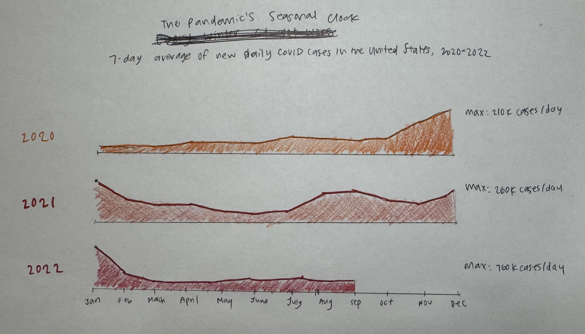
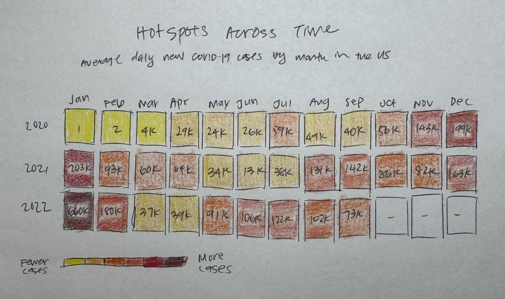
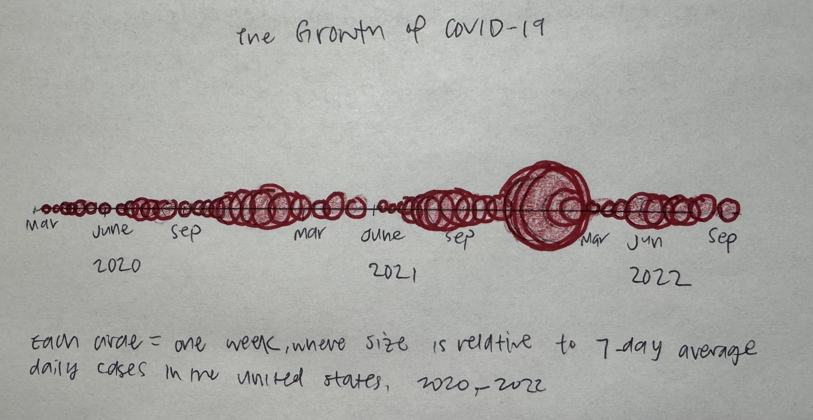
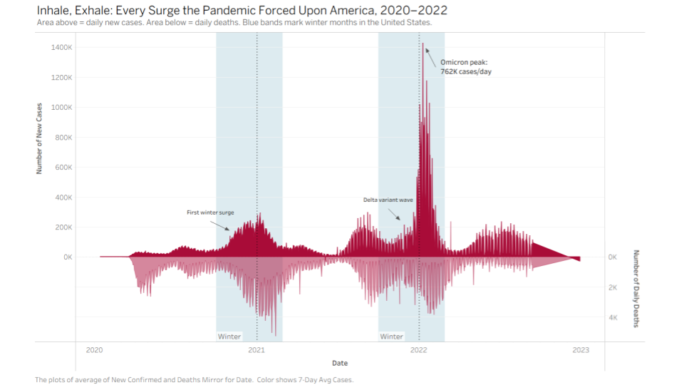

Reading & Critique

Insights about the data/visualization:
- COVID-19 cases in early 2020 were nearly invisible near the center of the spiral, reflecting how small the initial outbreak was relative to what followed.
- There was a major surge in late 2020 into early 2021 (October through January), visible as the spiral widens significantly through that arc, marking the first serious winter wave.
- The Omicron wave in winter 2021–2022 produced by far the largest spike, shown dramatically as the spiral breaks outward near the top of the chart at January, dwarfing every previous surge.
- Case counts in spring and summer months were comparatively lower across all years, visible as the spiral stays compact through the April–July arc, suggesting a consistent seasonal pattern.
- The pandemic followed a recurring seasonal rhythm, with cases rising each fall and winter and declining each spring and summer.
Design Critique:
The spiral format is genuinely clever for this dataset because it maps months to consistent angular positions across years, making seasonal patterns immediately visible. A reader can quickly see that surges repeatedly happened in the same part of the year simply by noticing where the spiral widens. The Omicron spike is visually dramatic and hard to miss, which matches its significance, and the use of a shaded region alongside a 7-day average line gives a sense of variability without overwhelming the chart with raw daily noise. The overall aesthetic is clean, and the minimal color palette keeps attention on the data.
The biggest weakness is that the polar layout makes it very difficult to accurately read or compare case counts. Radial distance is a much weaker encoding than position along a linear axis, so readers struggle to judge how much larger one surge was compared to another. The 150K reference scale shown in the upper-left only applies at one specific angle, making it nearly useless for reading values elsewhere in the chart. The chart also does not make clear where a reader should start, since the spiral begins near the center with no obvious visual cue pointing to 2020 as the entry point. The year labels are small and easy to overlook, which is a problem for a general audience unfamiliar with the timeline. For a general NYT readership, the spiral form is unconventional enough that many readers may not immediately understand how to read it, risking the very message it is meant to convey. A short reading guide or more prominent labeling of the starting point would have helped considerably.
Visualization Sketches

Design Rationale for Sketch 1:
- Motivation: The spiral's biggest problem is that radial distance is hard to read accurately. Unrolling it into stacked horizontal area charts swaps that for position on a linear axis, which is the most perceptually accurate encoding humans can use for magnitude. This is a major redesign that directly addresses the spiral's core perceptual flaw.
- Hoping to communicate: That winter surges were consistent and worsening across all three years. By aligning months vertically across rows, a reader can look straight down and compare the same season across years intuitively.
- What worked: The seasonal pattern becomes immediately obvious. The year-over-year escalation reads clearly even at a glance. Gradually darkening colors itensifies the feeling of case numbers surging.
- What didn't: Each row uses its own y-scale to surface seasonal shape in 2020, which means you cannot directly compare heights across rows. A reader who misses my max marking could easily misread the magnitude differences between years.
- What to explore next: A version with a more universal scale for number of cases to see trends across years more intuitively.

Design Rationale for Sketch 2:
- Motivation: The original spiral requires learning an unconventional format. A calendar grid requires much less explanation for most readers, which felt like a meaningful improvement for a general NYT audience. This is a minor redesign in concept but a major redesign in form.
- Hoping to communicate: That most of 2020 and stretches of 2021 were manageable, but January 2022 was categorically different. The color moving from yellow to deep red tells that story without the reader needing to read a single number.
- What worked: Blocking numbers into average cases per month reduces the number of datapoints to pay attention to. Seasonal and cross-year comparison becomes much simpler. Reading down a column shows the same month across years. Reading across a row shows a full year's change. The dark red on extreme cells draws the eye immediately to the most critical months.
- What didn't: Color alone is imprecise and the scale is so dominated by the Omicron months that mid-level surges were not colored as accurately to scale as I had hoped. It slightly downplays surges that were genuinely significant.
- What to explore next: A more precise way to show magnitude and change over time simultaneously.

Design Rationale for Sketch 3:
- Motivation: The other sketches focus on seasonal comparison, but this one prioritizes the narrative arc of the whole pandemic as a single continuous story. It was also inspired by the opinion article context: the original chart appeared alongside an argument, so embedding event flags felt appropriate. This is a major redesign in both form and editorial framing.
- Hoping to communicate: The sheer scale jump between early 2020 and January 2022. A tiny dot next to a circle nearly 10 times its radius makes that difference evident and impactful.
- What worked: The evolving sizes of the circles in one continuous line helped to portray the COVID-19 pandemic as a changing event over time. This helped to preserve the continuity aspect of the original spiral design without losing the more objective comparison of magnitude.
- What didn't: Circle area is less precise than the traditional bar height for reading exact values. The circles also overlap in high-surge periods, which obscures individual weeks. It also loses the seasonal monthly comparison structure the past two sketches were built around. On a practical level, drawing clean circles by hand was difficult, and because the weekly intervals are so close together the bubbles ended up overlapping heavily, which meant the sketch did not turn out the way it looked in my head when I first conceived it.
Final Visualization Design

Design Rationale for my final visualization:
- Motivation: The three sketches each cut the timeline into separate yearly or monthly segments, which made the pandemic feel like discrete episodes rather than one continuous story. The final design removes all panel breaks entirely and plots a single uninterrupted x-axis from January 2020 through September 2022, so the reader experiences the pandemic as it actually unfolded: without pause. Beyond continuity, this design introduces several elements that none of the sketches explored. First, daily deaths are mirrored below the zero line as a second area, bringing in a second variable from the dataset and reinforcing that every case surge was followed by a death surge directly beneath it. Second, key pandemic events are annotated directly on the chart, including the first winter surge, the Delta variant wave, and the Omicron peak with its exact value of 762K cases/day. None of the three sketches labeled these events, which meant a reader with no prior knowledge of the pandemic would not know why the surges occurred. Third, blue reference bands are used to mark every winter season across the full timeline, replacing year labels as the primary seasonal anchor without cutting the chart into pieces. Finally, the y-axis scale is shared and fixed across the entire chart so that 2020 looks appropriately small and 2022 appropriately dominant, directly addressing the limitation of Sketch 1 where independent scales made cross-year comparison misleading.
- Hoping to communicate: That the pandemic never truly stopped, it only briefly paused between surges, and that Omicron was categorically worse than anything before it. The title "Inhale, Exhale" reflects the visual rhythm of the chart itself: cases rise above the zero line like an intake of breath, and deaths fall below it like a release, giving the pandemic a pulse that the reader can feel across the full timeline. The mirrored deaths area reinforces that spikes in cases were always followed by spikes in deaths, and the blue winter bands make the seasonal pattern legible without requiring any prior knowledge of COVID-19 history.
- What worked: The continuity of the single timeline solves the biggest problem with both the original spiral and the earlier sketches. The winter reference bands do the seasonal comparison work without introducing visual cuts. Direct event annotations answer the "why did this spike happen?" question inline, turning the chart into something closer to a visual essay that suits the original opinion article context. The mirrored dual-axis structure gives the chart a distinctive shape that feels like breathing. The zero line acts as a natural visual divider between the two measures without any additional labeling.
- What didn't: The dual-axis setup required a lot of manual configuration in Tableau, including fixing both axis ranges independently and preventing negative numbers from appearing on the wrong side, which was only fully resolved through final touchups in Google Slides to shift and block out unwanted labels. The deaths area is also on a very different numerical scale from cases, so the mirror is more visual than proportionally accurate, which is a tradeoff worth acknowledging. The shared absolute scale also means 2020 cases appear nearly flat at the bottom, making it harder to appreciate the shape of the first year's surges.
Final Writeup
The final visualization is a continuous dual-axis area chart showing daily new COVID-19 cases and deaths across the full pandemic timeline from January 2020 through September 2022 in the United States. The central message is that the pandemic was one unbroken escalating story, and that the Omicron variant made every previous surge look small by comparison. Cases are encoded as a filled area rising above the zero line using a bright red, and deaths are encoded as a mirrored filled area below the zero line in a paler red. I chose this color pairing to make the deaths look like a reflection (visually like on a body of water) of the number of cases, where what you see in the deaths half depends on what is displayed in the cases half. Both use area mark types because the filled shape communicates cumulative weight and continuity better than a line alone. A single shared x-axis spanning the full date range replaces the per-year panel structure from Sketch 1, removing the visual cuts that made the pandemic feel episodic. Blue reference bands mark every winter season across the full timeline, making the seasonal surge pattern readable at a glance without breaking continuity. Axis ranges are manually fixed so the cases side runs from 0 to 800K and the deaths side runs from its minimum to 0, with the zero line acting as a clean divider between the two measures. Monthly averages are used rather than raw daily values to reduce noise. This smoothing is a deliberate tradeoff: it obscures within-month volatility and short sharp spikes, but it makes the overall surge shapes cleaner and more readable for a general audience.
The sketching and critique process shaped this design in two important ways. The critique of the original spiral identified radial distance as a weak encoding and the lack of a clear reading entry point as a major usability problem. This final design addresses both by anchoring the chart to a familiar left-to-right timeline and using position on a linear axis as the sole encoding for magnitude. The sketching process also revealed a core tension that could not be fully resolved: Sketch 1 used independent y-axis scales per year to preserve the seasonal shape even in low-case 2020, while this final design uses a single absolute scale where 2020 appears nearly flat. That is an honest tradeoff because the intended message is about escalation across years, and independent scales would obscure that comparison. One critique from the original given design that this design still does not fully address is precision. The original spiral made it nearly impossible to read exact values, and while this chart is significantly more readable, the smoothed monthly averages and the visually dominant Omicron peak still make it difficult to assess the relative size of mid-level surges like Delta or the first winter wave with much accuracy. The addition of the mirrored deaths axis was a decision that emerged from the redesign process itself rather than the initial critique, and it introduced new tradeoffs around scale comparability (described in detail in the final design description above) that would require further iteration to fully resolve.